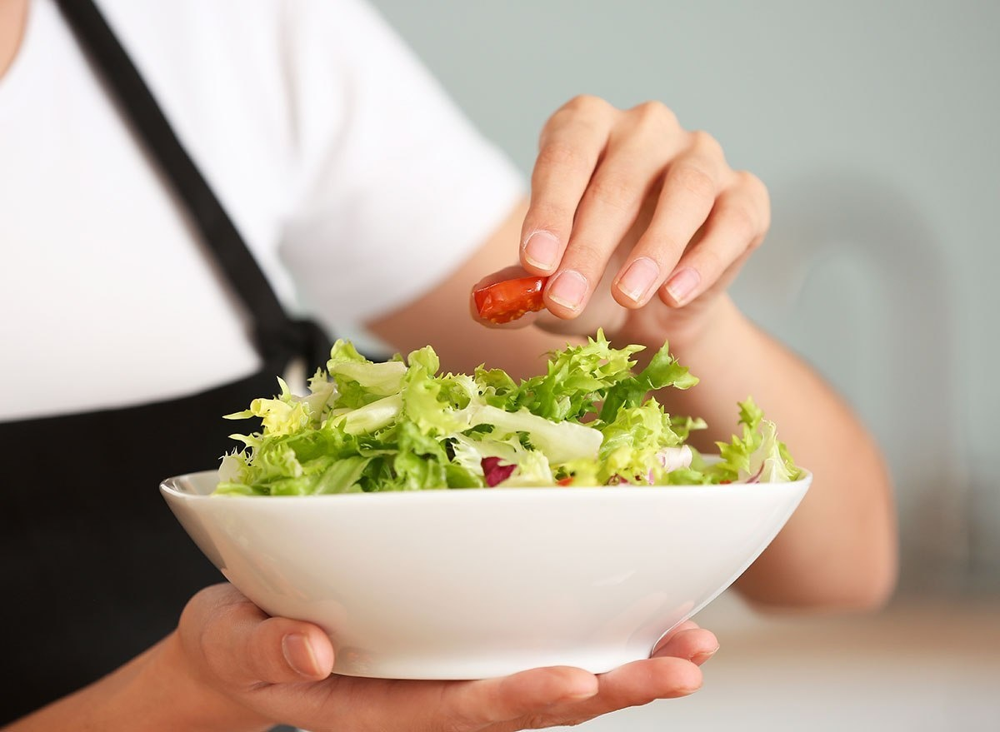

What happens when you eat salad every day?
Just like any other food, salads have pros and cons that you need to consider.
Salads may be the most loved - and most hated - form of when you eat vegetables for lunch or dinner. Some people find them delicious and satisfying, while others are reluctant to include greens in their diet to keep up with their healthy eating goals.
But is salad really as healthy as you think? And what happens if you eat them every day?
Lauren Hoover and Toby Amidor, award-winning nutritionist and Wall Street Journal bestselling cookbook author, talk about salads. 1. You'll Get a Larger Serving of Fiber.Eating raw vegetables and fruits is a great way to incorporate more fiber into our diets. When you add fiber to your daily diet, you can help prevent obesity and type 2 diabetes, as well as support healthy digestion. “The fiber found in vegetables can also help with blood cholesterol control,” says Hoover. Therefore, if we are strategic about what we put in our salads, we can get some health benefits from eating them regularly." To increase the fiber in your salad, try adding some tomatoes, carrots, or cucumbers.2. You will consume useful nutrients.Vegetables contain all the nutrients your body needs, but you may need to eat more. According to Amidor, "vegetables provide many important nutrients including vitamins A and C, antioxidants, potassium, and a variety of phytonutrients that are natural plant compounds that can help prevent and fight disease". Expert Hoover believes salads are a great way to get your recommended daily servings of vegetables. According to the Journal of the Academy of Nutrition and Dietetics (USA), people who said they ate a special salad had higher amounts of vitamins A, B-6, C, E, K, folate, choline, magnesium and potassium.3. You can consume more calories and fat.Although salad is full of fiber and nutrients that our body needs, it is important to note that regularly eating salad can also bring some unwanted side effects. In the same study from the Journal of the Academy of Nutrition and Dietetics, it was found that people who ate salad regularly also showed higher amounts of sodium, fat, sugar, and refined grains. According to Amidor, this is because most people often add ingredients with more fat and sugar to make salads tastier. Salads made with a variety of high-calorie ingredients such as cheese, a variety of nuts and seeds, chips, butter and cream sauces, can cause a salad's calories to skyrocket, says Amidor. 800 calories or more. Eating high-calorie meals regularly can lead to weight gain, obesity, and type 2 diabetes." Hoover also reminds us that "some sauces contain hidden ingredients that add calories and sugar to salads". According to expert Amidor, should add things like salmon, cooked eggs, beans, tofu, shrimp, chicken breast or lean beef and avoid fried foods.4. You may feel hungry and a little unsatisfied.A study published in the Journal of Men's Nutrition and Protein intake, concluded that insufficient protein intake made men of all ages feel hungrier and less satisfied with their meals. "If salad dressings are incomplete, meaning they don't contain all of the macronutrients - lean protein, healthy fats and complex carbohydrates - they may not provide a meal," says Hoover. satiated and made people feel hungry.” While you can switch to salads to eat healthier and consume fewer calories, it can leave you hungrier and less satisfied if you don't add enough protein and useful nutrients to that salad. . So it's important to listen to your body while you eat and incorporate protein where you can. 5. You may feel more bloated.Salads and raw vegetables can be great for regulating digestion and getting useful nutrients. But too many raw vegetables can be bad for your gut. According to Hoover, "eating a salad every day can make some people feel bloated because too many raw vegetables and raw foods can be difficult to digest." If you experience discomfort and bloating, it is advisable to check and monitor your raw vegetable consumption. Our bodies are unique and can prepare salads and raw vegetables differently, which is why Hoover stresses that "it's so important to listen to your own body". |